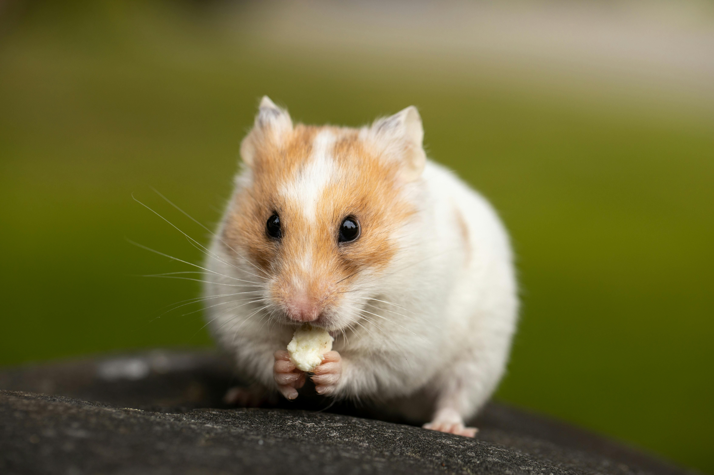

Siberian Hamster
The Russian hamster is a species of myomorphic rodent of the family Cricetidae. It is native to Kazakhstan and southwestern Siberia, and no subspecies are recognized.
- Scientific name: Phodopus sungorus
- Average Length: 8 cm (Adult)
- Average Lifespan: 12 months (In freedom)
- Habitat: Steppes, Sand Dunes, Edges of Deserts, and other warm, dry areas.